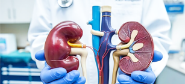
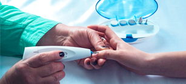

TRANSPLANT CARE
Liver & Kidney Transplant in India
Advanced Transplant Care for a Healthier Tomorrow
Transplant Centres
 Experienced
ExperiencedTransplant Specialists
Treatment Facilities
Travel Support
Advanced Transplant Care for a Healthier Tomorrow
Experienced


Liver and kidney transplants are advanced surgical procedures for patients with end-stage organ failure. These life-saving treatments replace a diseased organ with a healthy organ from a living or deceased donor, helping patients regain health and improve quality of life.
Read MoreDepending on the medical condition, different transplant options may be recommended. The most suitable option is decided after a detailed evaluation.
Replacement of a diseased liver with a healthy liver from a living or deceased donor.

Replacement of a diseased kidney with a healthy kidney from a living or deceased donor.
A healthy living donor (usually a family member) donates a part of their liver or one kidney.

Organ donation from a deceased donor, managed as per legal and medical guidelines.
Our team helps you explore the most suitable treatment plan based on your condition and medical reports.
Detailed assessment tests and specialist review.
Evaluation of living or deceased donor compatibility.
Performed at top transplant centres with modern technology.
Regular monitoring, medications and follow-up for long-term health.
Guidance for recovery and healthy lifestyle after transplant.
We work with trusted and well-equipped hospitals across India.

New Delhi
NABH & JCI
Accredited

New Delhi / Chennai
JCI
Accredited

Gurugram
NABH & JCI
Accredited

Gurugram
NABH & JCI
Accredited
Gurugram
NABH Accredited
Our network includes experienced liver and kidney transplant specialists across leading hospitals.
We assist you at every step of your transplant journey.
Find answers to common questions about liver and kidney transplant in India.
Read about the experiences of our international patients (shown with consent).
"I received excellent care from the medical team. The entire process was well organized and supportive."
"The doctors and staff were professional and compassionate. I feel much healthier now."
"The team guided me at every step, from evaluation to recovery. I am grateful for their support."
Share your medical reports and let our team help you explore doctors, hospitals and transplant options in India.